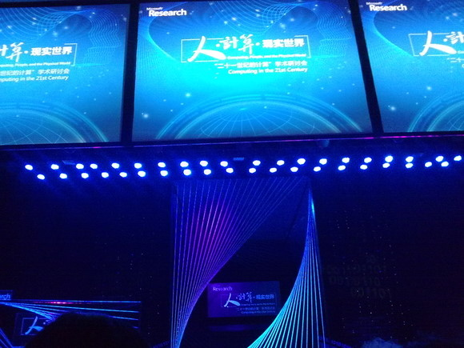

还是第一次去交大呢
昨儿去交大闵行校区参加了个Computing, People, and the Physical World. Computing in the 21st Century的学术研讨会，听上去很NB的样子！7个演讲的大牛中，3个拿过图灵奖！
第一次出现在这种高水平的场合，可惜没有全程笔记~~ 现在无法回忆起全部具体细节了，只能期望在某些情境之时能在脑海中浮现吧..
前一天晚上收到确认邮件的时候很意外，因外当时的口吻是后边报名的基本没票了.. 可是早上我们坐的那辆车坐了一半都不到.. 但是会场倒是似乎坐满了
我们比较早到会场，于是果断坐在了同济软院位置的第一排的正中，总第四排、正中位置！前面一排是复旦附中的女生们，再前面就是reserved了，所以距离很近啊！可惜没一个好用的相机啊啊啊！



7点20分前后到菁菁堂，9点才正式开始演讲。第一个Rick Rashid是Microsoft的全球高级副总裁，介绍的当然是Microsoft的东东，我只记得他讲了Microsoft Research的重要性、介绍了一些Microsoft Research出来的前沿炫丽成果，不过还是很耀眼的。
话说Rick Rashid曾是DARPA的人啊，中国有类似DARPA的机构么，还招人不….
第二个Barbara Liskov是08年图灵奖，而且据说是美国第一个计算机方面的女PhD，而且后面的David Culler和Satyanarayanan都在演讲中表达了对她的敬意！（他俩曾经听过她的课）可Barbara讲的都是她自己过去的经历，研究领域从Programming Language到Programming Methodology再到如今还在做的Distributed Computing，从中展开她的主题”The power of Abstraction”。
（注：什么，她当时讲过PL？！ 2013/07/16）
可是我更想听的是她对未来的趋势的理解啊…记得在上午的观众提问中，有人问她你为啥在那个时候从此领域转到彼领域呢？她回答“because I realized that ‘the era of distributed computing has come’”，和没说一样…
我也向着投影出来的互动手机号码发送了短信，提问“下阶段（如果有的话），会研究哪个领域呢？”可是问题石沉大海..
第三位David Culler介绍的网络，一开始我觉得他讲的很入门，正好和正在学的《计算机网络》相印证，可是后来我还是睡着了…. 他描绘的是一个万物皆连在网络之中的情景，还介绍了个TinyOS，虽然当时我不知道那是个啥.. 而且似乎这位牛有负责些IPV6的事宜。
号外：中午和炘哥逛了下闵行校区，我觉着吧，有一个数字可以很恰当地形容他！大家都知道的。
下午迟到了.. 规定是1:45开始，我两点才到 =.=
Chuck Thacker是09年的图灵奖，他的演讲题目是”Improving the Future by Examining the Past”，我觉得讲的蛮有意思的，至少对我而言。他介绍了些在几十年前应用的技术，并阐释了如果放在现在那些技术并不一定是首选。虽然讲得很好，可我现在想的起只有个Virtual Memory和一个Network的例子，2/6啊……
Mahadev Satyanarayanan讲的是Mobile Computing，这位名字很长的大牛发型也很帅。（似乎所有牛牛们都是白头…必然？）我一开始以为他要讲嵌入式，他一开始也确实是这么做的，给了一幅图预测Mobile将超过PC啥的，可是后来还是主要往Computing上讲了，毕竟主题是这个嘛… Mobile Computing的Freedom(anything, anytime, anywhere)、Cloud Computing的Simplicity。再后来…再后来我就闭上了眼睛，缺乏午睡啊……
洪小文是唯一一个用中文的，他说的是From Ubiquitous Computing to Ubiquitous Harmony。我回来一查才发现Ubiquitous Computing就是大名鼎鼎的普适计算… 身为微软亚洲研究院的老大，当然要介绍一些微软的新东西了，请了3个小弟上来做demo，一个画图搜索、一个人立方、一个翻译词典，其间甚至显示了马英九和徐静蕾之间的联系…当然微软亚洲研究院所展示的那些成果基本都是满堂彩的。
最后一位出场的压轴人物John Hopcroft是86年的图灵奖，讲的是Computing and the Future。他先讲了些自己的例子说明Computing在生活中的应用可以让生活如此美好XX。在那之后…在那之后他就开始使用数学公式了！接下来发生了什么我是不咋清楚的了…
下午的观众提问有人问Science和Engineering的区别，洪小文说的回答大致是两者是密切相关不可分离的，正如在engineering的时候用到science的精神。而且往往是Engineering用Science方法，在Engineering中往往又会出现Science问题。我也觉得他们密不可分、相辅相成。
甜姐还是下午第一个提问的同学，说的是水立方的实用性，就比如对于咱平民百姓而言不咋实用，及与SNS的对比？（我回来试了一下，对我自己人立方，结果就俩人…而且…）洪小文的回答是“SNS交友用的是你自己的隐私数据（当然是你同意使用的）人立方靠的是网络上网页的数据，还是有很大区别的”。
这说到隐私的问题，我倒是压根没想到过…不过我的理解是这是Microsoft Research Asia做出来的东西，研究院讲的就是创意，至于实用性啥的不是主要关心范畴，那是公司的事情，当年法拉第电磁感应的时候也不清楚它将来会有这么大的重要性。
原本的主要目的就是来感受气氛、开拓视野、顺便沾沾灵气啥的。结果练习英语听力倒是成为了一个意料之外的收获。今儿之后就是对自己的听力充满信心！也许是他们为了照顾学生听众们故意放慢了语速？
说到Computing，其实我觉得这个范围可以很宽广，一切都是数据，区别的只是对数据的理解方式，那么对数据的处理就可以说是Computing吗？电脑就是Computer。这会上的Computing应该是狭义的定义吧。
洪小文说“之前的XXX说硬件上面要配软件，我说在软件之前要配个人”，他的讲题也是关于技术对生活的促进方面的，我们所见略同啊哈哈，将技术应用于生活，能活的更好是我发下的宏愿！
关于对现场青年学生们的建议，某牛说“Passion…”、某牛说“ask simple questions”，是在上午问的，还有个Rick的答案忘了…
也许是听众们都是学生，各位大牛讲的都不是特别深，正在学的OS、计算机网络、嵌入式都可以得到或多或少的佐证，对境界提升有很大帮助！而且还领了一个包，与之相比，翘一天课算个啥……
[大笑]